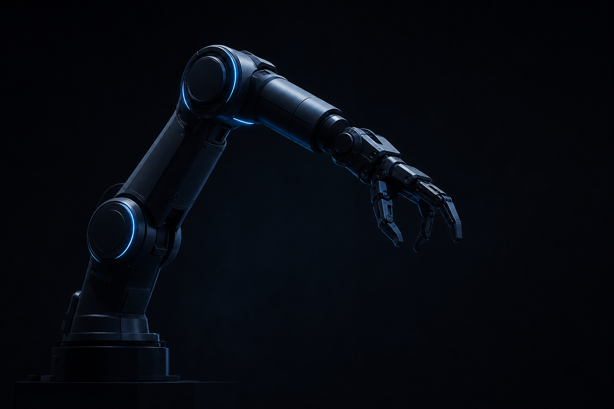
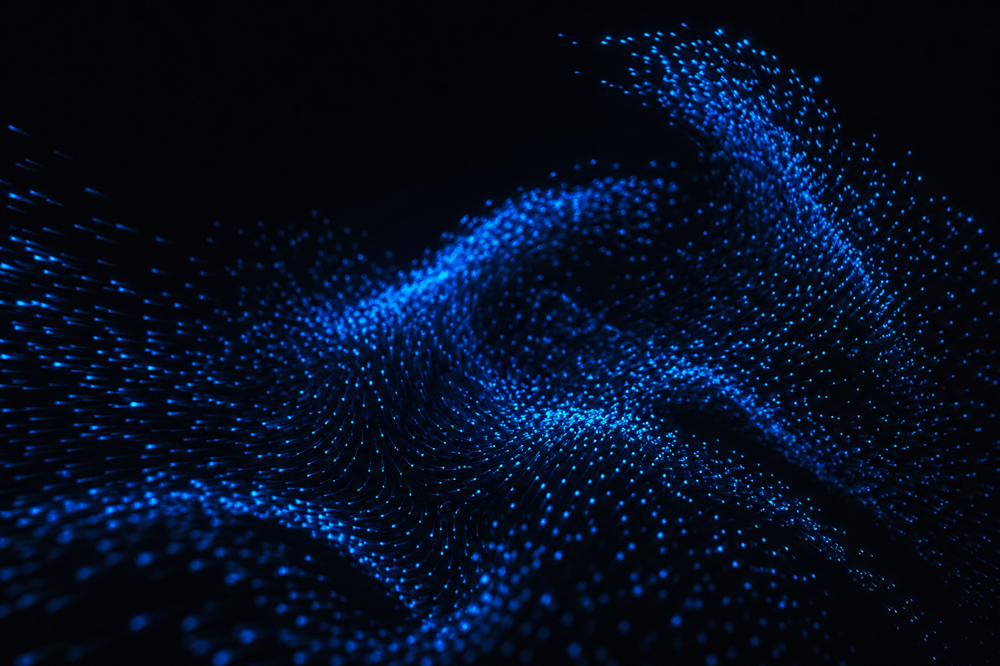
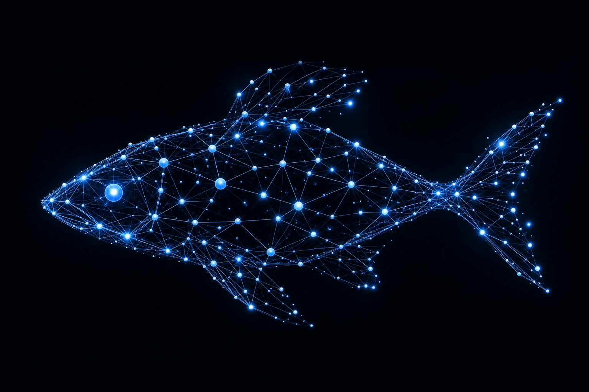
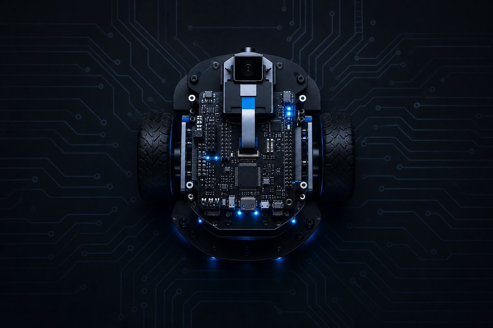
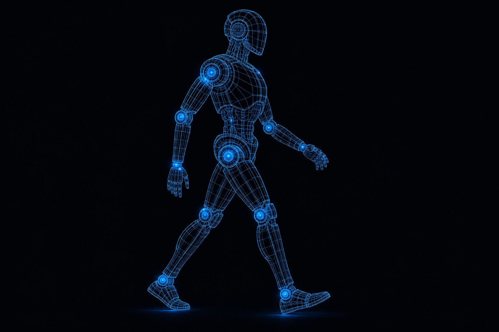

Quantifying the biomimicry gap in biohybrid robot-fish pairs
Bioinspiration & Biomimetics


I'm a Senior Physical AI Engineer based in Zurich, Switzerland, specializing in autonomy, robot perception, and embodied AI systems for real-world robotics platforms.
I hold a PhD from EPFL where I studied the collective dynamics of fish shoals and built robots that could integrate into groups of living fish in real time — bridging the gap between biological and artificial systems.
My expertise spans motion generation, autonomous navigation, robot learning, sim-to-real transfer, and high-performance robotics software. I've published in venues like the Journal of the Royal Society Interface, IEEE Access, and PLOS ONE, and review for Nature Communications, ICRA, IROS, and NeurIPS.
Cyberwave Switzerland GmbH · Zurich, Switzerland
Autonomous navigation, robotics SDK architecture, perception pipelines, and 3D reconstruction.
AICA SA · Lausanne, Switzerland
Motion generation and control for industrial robotic systems, ML-based adaptive robot behaviour, and GPU/ML deployment pipelines.
EPFL · Lausanne, Switzerland
Deep learning for collective animal behaviour, real-time computer vision, mobile robot platform design, and embedded control software.
MEAD, University of Patras · Patras, Greece
Multi-robot coordination, aerial-ground drone swarm integration, and waypoint tracking software.
Inria Nancy Grand-Est · Nancy, France
Safety-aware reinforcement learning, CPG-based locomotion controllers, and robot damage recovery on the iCub humanoid.
EPFL · Robotics, Control, and Intelligent Systems
Supervised by Prof. Francesco Mondada (Mobots group). Funded by EPFL and the SNSF.
University of Patras · Greece
Thesis completed at Inria Nancy (France): Safety-Aware Intelligent Trial-and-Error for Robot Damage Recovery.

Selected peer-reviewed work. Full list on Google Scholar.
Bioinspiration & Biomimetics
Journal of the Royal Society Interface
BayesOpt Workshop, NeurIPS

ROS-based framework supporting robot-animal experimentation setups. Enables real-time biohybrid interactions between robots and fish.
Analysis and modelling tools for fish collective behaviour. Includes trajectory processing, social interaction modelling, and visualization.
Flexible and generic C++ wrapper for the DART physics simulator, designed for evolutionary computation and robot learning.
Extension layer to ROS 2 providing a modular framework for application composition through custom component classes in C++ and Python.
Library modules for full control loop algorithms: state representation, motion planning, kinematics, dynamics, and control.
Highly templated C++11 Bayesian optimization framework for efficient black-box optimization.

I'm always interested in discussing robotics, ML, and collaborative opportunities. Feel free to reach out.
Say Hello